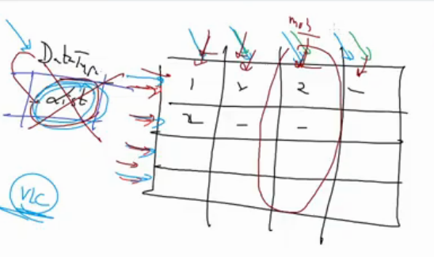

Python3 basics to expert Day2
Task :
• Can you extract a column from a nested list? //Impossible since lists only support row wise operation

Terms
Live Interpreter
IDE
Environment Variables
Data Types
x=3 //integer
x=2.3 //float
x="hi" //string
x=True //bool
x= [ "A", “B”, “C” ] //list
x= [[1,"A"] , [2,"B"]] //2D list
In-built functions
type() //returns data-type
print() //print the contents
dir(module_name) //To see available functions inside a module
dir(__builtins__) //To see builtin functions
x = input() //To take input from keyboard and assign it to x
Modules
numpy
>>>import numpy
>>>numpy.array(x) //where x is the list
>>>x[1:4 , 1] //Column wise extraction possible